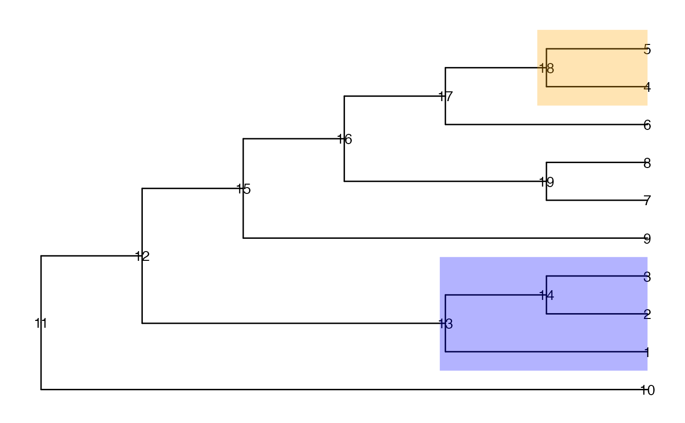

Generate a table of top-ranked nodes from the optimal resolution candidate of entities on a tree.
topNodes(
object,
n = 10,
sort_by = NULL,
sort_decreasing = FALSE,
sort_by_absolute = FALSE,
p_value = 1
)An output object from evalCand.
An integer, the maximum number of entities to return.
A character string specifying the column of
object$output to sort by. Set to NULL to return without
sorting.
A logical value indicating whether to sort by
decreasing value of the sort_by column.
A logical value indicating whether to take the
absolute value of the sort_by column before sorting.
A numeric cutoff value for adjusted p-values. Only entities with adjusted p-values equal or lower than specified are returned.
A data.frame with test results. The node
column stores the node number for each entity.
suppressPackageStartupMessages({
library(TreeSummarizedExperiment)
library(ggtree)
})
data(tinyTree)
ggtree(tinyTree, branch.length = "none") +
geom_text2(aes(label = node)) +
geom_hilight(node = 13, fill = "blue", alpha = 0.3) +
geom_hilight(node = 18, fill = "orange", alpha = 0.3)

set.seed(1)
pv <- runif(19, 0, 1)
pv[c(seq_len(5), 13, 14, 18)] <- runif(8, 0, 0.001)
fc <- sample(c(-1, 1), 19, replace = TRUE)
fc[c(seq_len(3), 13, 14)] <- 1
fc[c(4, 5, 18)] <- -1
df <- data.frame(node = seq_len(19),
pvalue = pv,
logFoldChange = fc)
ll <- getCand(tree = tinyTree, score_data = df,
node_column = "node",
p_column = "pvalue",
sign_column = "logFoldChange")
cc <- evalCand(tree = tinyTree, levels = ll$candidate_list,
score_data = df, node_column = "node",
p_column = "pvalue", sign_column = "logFoldChange",
limit_rej = 0.05)
## Unsorted result table
topNodes(cc)
#> node pvalue logFoldChange adj.p signal.node
#> 1 6 8.983897e-01 -1 9.446753e-01 FALSE
#> 2 7 9.446753e-01 1 9.446753e-01 FALSE
#> 3 8 6.607978e-01 -1 9.251169e-01 FALSE
#> 4 9 6.291140e-01 -1 9.251169e-01 FALSE
#> 5 10 6.178627e-02 1 1.441680e-01 FALSE
#> 6 13 2.672207e-04 1 9.352723e-04 TRUE
#> 7 18 1.339033e-05 -1 9.373233e-05 TRUE
## Sort by p-value in increasing order
topNodes(cc, sort_by = "pvalue")
#> node pvalue logFoldChange adj.p signal.node
#> 1 18 1.339033e-05 -1 9.373233e-05 TRUE
#> 2 13 2.672207e-04 1 9.352723e-04 TRUE
#> 3 10 6.178627e-02 1 1.441680e-01 FALSE
#> 4 9 6.291140e-01 -1 9.251169e-01 FALSE
#> 5 8 6.607978e-01 -1 9.251169e-01 FALSE
#> 6 6 8.983897e-01 -1 9.446753e-01 FALSE
#> 7 7 9.446753e-01 1 9.446753e-01 FALSE